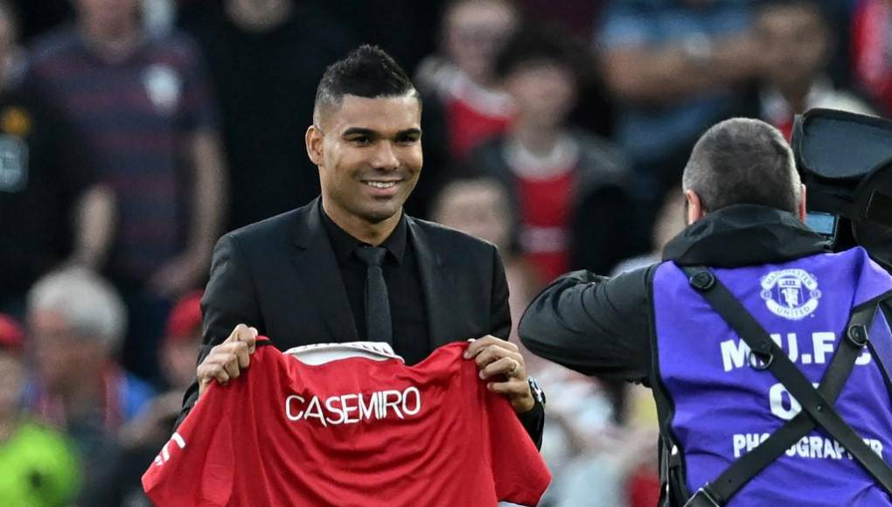

Noticias

Oficial: Casemiro ya es del United, que paga 72+13M€
FALTA POCO PARA EL MUNDIAL
Hoy 20 de agosto del 2022, faltan exactamente 93 días para el inicio de la Copa del Mundo. El torneo comenzará el domingo 20 de noviembre de 2021 con el partido entre Qatar y Ecuador en el Estadio Al Bayt.

Enlaces relacionados
FUTBOL

Deporte que se practica entre dos equipos de once jugadores que tratan de introducir un balón en la portería del contrario impulsándolo con los pies, la cabeza o cualquier parte del cuerpo excepto las manos y los brazos; en cada equipo hay un portero, que puede tocar el balón con las manos, aunque solamente dentro del área; vence el equipo que logra más goles durante los 90 minutos que dura el encuentro.
El Fútbol, posee belleza de movimientos y sutilezas, pero también acciones violentas y error humano; sus seguidores difícilmente puedan escapar al cúmulo de sentimientos encontrados que inevitablemente irradia: alegría, tristeza, sorpresa, decepciones, camaradería, agresividad, frustración, etc. todos ellos en un orden de aparición cambiante dentro de un mismo encuentro. En su reinado conviven los talentosos y los rústicos por igual, puede ser multitudinario o solitario pero sin dudas, es eficazmente atractivo para todos sus protagonistas. En resumen fútbol es "pasión", es un sentimiento difícil de definir tanto para los pobres en lectura como también para los colegiados.
METODOLOGIA Y NATURALEZA DEL JUEGO

El fútbol se juega siguiendo una serie de reglas, llamadas
oficialmente reglas de juego. Este
deporte se practica con una pelota esférica (de cuero u otro material con una circunferencia
no mayor a 70 cm y no inferior a 68 cm, y un peso no superior a 450 g y no inferior a 410 g
al comienzo del partido), donde dos equipos de once jugadores cada uno (diez jugadores "de
campo" y un guardameta) compiten por encajar la misma en la portería rival, marcando así un
gol. El equipo que más goles haya marcado al final del partido es el ganador; si ambos
equipos no marcan, o marcan la misma cantidad de goles, entonces se declara un empate. Puede
haber excepciones a esta regla; véase Duración y resultado más abajop
seguir
leyendo
HISTORIA DEL FUTBOL
CEl fútbol es un deporte originado en Inglaterra, inducido luego por varios países de todo el mundo y convirtiendo en el deporte rey de todos los tiempos. El fútbol constituye un deporte de Alto Rendimiento y a la vez un espectáculo de masa que atrae a miles de aficionados.
seguir leyendoLUIS DIAS, NOMINADO AL BALON DE ORO
18 de agosto 2022 , 03:22 p. m. Este jueves, France Football presentó oficialmente al colombiano Luis Díaz, nominado al Balón de Oro 2022. La revista destacó a través de sus redes sociales los mejores momentos del extremo en Liverpool.
JUNIOR VS UNION MAGDALENA: SEMIFINALES DE COPA COLOMBIA
El primer compromiso será, efectivamente, este miércoles, a partir de las 6 de la tarde, en el estadio Metropolitano. La vuelta, por su parte, está programada para el miércoles 14 de septiembre, a las 6 p.m., en el estadio Sierra Nevada, de Santa Marta.